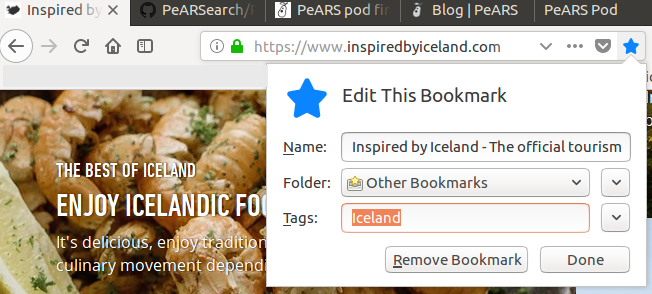
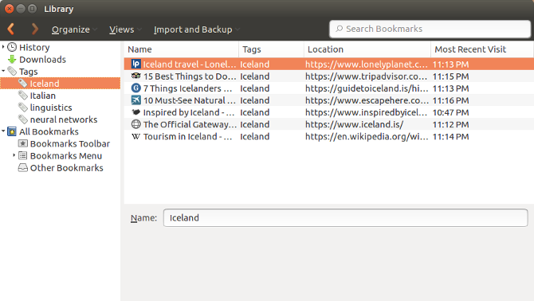
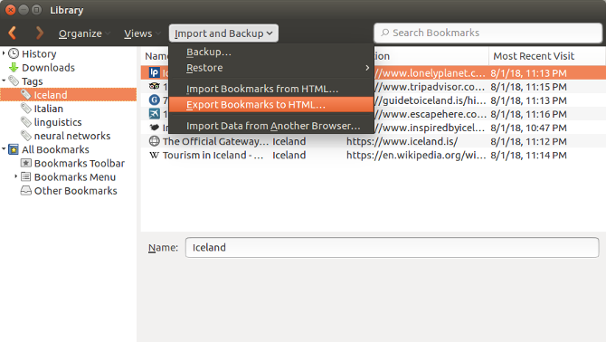
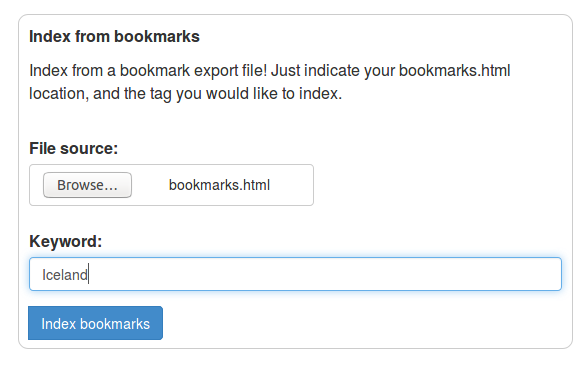
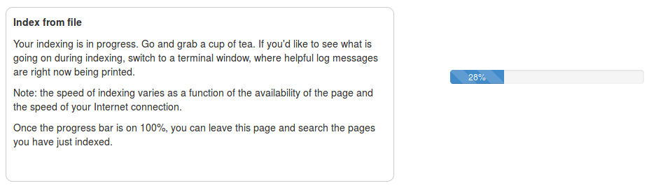
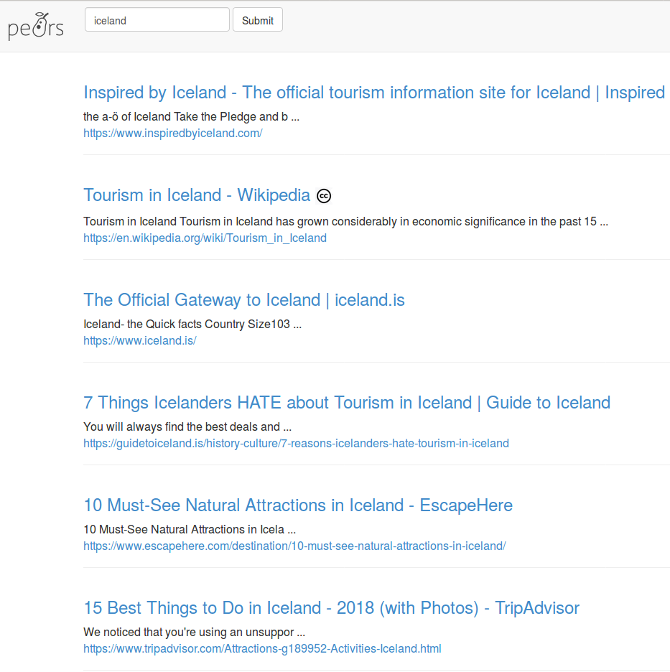

This is a little tutorial on using PeARS to index your Firefox bookmarks and share the resulting pod with your friends.
For this tutorial, we'll imagine that you are planning a holiday to Iceland with some friends, and you are browsing the Web for good tips on what to see and do. We will use the handy bookmarking function of Firefox to collect Web pages we might want to index.
Let's start and suppose that our first port of call is the tourist board of Iceland at https://www.inspiredbyiceland.com/. We will bookmark this page using Firefox, simply by clicking on the little star in the URL bar of the browser:

Note that Firefox invites you to tag your bookmark. This is important as it will allow PeARS later to know what to index from your bookmarks file. For the sake of example, we will tag our bookmark with the Iceland keyword.
Let's browse the Web a little more and bookmark a few more pages. Once we are done, we can check our bookmarks by going to Bookmarks and Show all bookmarks in the menu bar (or pressing Shift+Ctrl+O). The picture below shows what we have bookmarked under the tag Iceland.

We are going to use Firefox's export function to save the bookmarks to a file that PeARS can read. Click on Import and backup and then on export bookmarks to HTML. Save the file somewhere on your hard drive (and remember the location!)

We can now switch to our PeARS tab. Go to the 'Indexer' page and find the 'Index from bookmarks' section in the bottom right hand corner. Browse to the location where you have just saved your bookmark file, and enter the keyword you used as tag when your were bookmarking pages in Firefox (in our case, Iceland). Be sure to enter the tag exactly as you used it before! Then click on Index bookmarks.

PeARS will start indexing the web pages that you tagged as Iceland in your bookmarks. Wait until the progress bar is on 100%.

That's it! If you now go to your 'Pod management' page, you should see a new Iceland pod there. It will also appear in your orchard. You can search it:
